Compétences techniques
L1
Orchestration de conteneurs
Déploiement et exploitation de clusters à grande échelle
Orchestration de conteneurs
Déploiement et exploitation de clusters à grande échelle
 Kubernetes
Kubernetes OpenShift
OpenShiftK3s
Hypershift Docker
Docker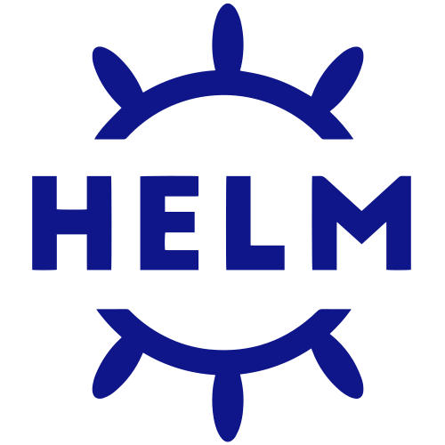
HelmKustomize
Helmfile
L2
Cloud & Infrastructure as Code
Provisionnement d'infrastructures multi-cloud
Cloud & Infrastructure as Code
Provisionnement d'infrastructures multi-cloud
 AWS
AWS Azure
AzureScaleway
 Proxmox VE
Proxmox VE Terraform
TerraformOpenTofu
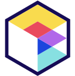
Terragrunt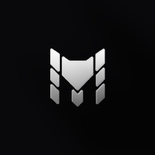
TerramateCrossplane
L3
GitOps & CI/CD
Livraison continue pilotée par Git
GitOps & CI/CD
Livraison continue pilotée par Git
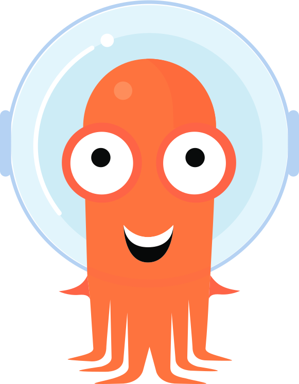
ArgoCD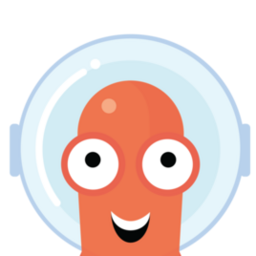
Argo RolloutsKargo
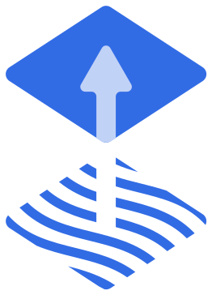
Flux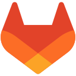
GitLab CI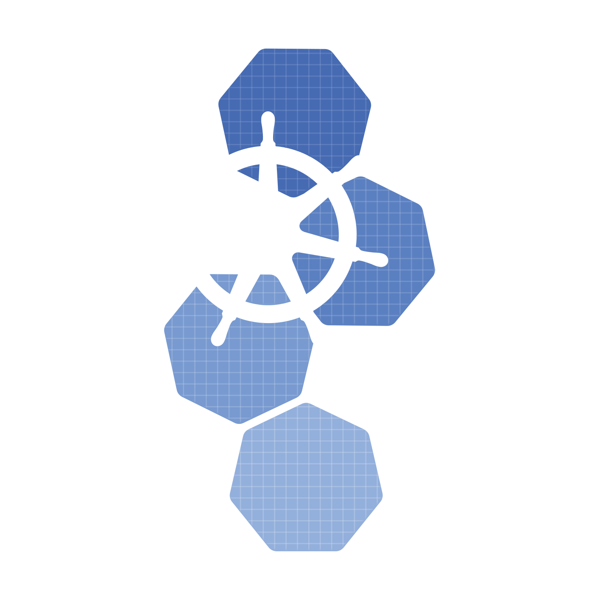
Kubebuilder
L4
Observabilité & Fiabilité
Supervision, alerting, traçabilité et service mesh
Observabilité & Fiabilité
Supervision, alerting, traçabilité et service mesh
 PrometheusAlertmanager
PrometheusAlertmanager Grafana
GrafanaPagerDuty
 OpenTelemetry
OpenTelemetry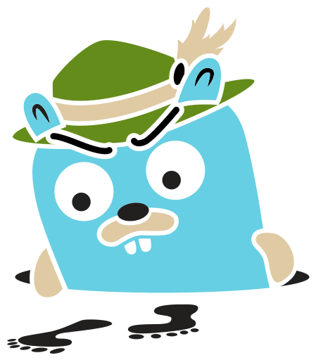
JaegerIstio
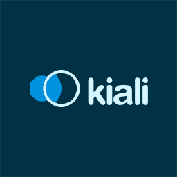
Kiali Envoy Gateway
Envoy Gateway
L5
Sécurité & Secrets
Secrets, certificats, identité et politiques de sécurité
Sécurité & Secrets
Secrets, certificats, identité et politiques de sécurité
 Vault
Vault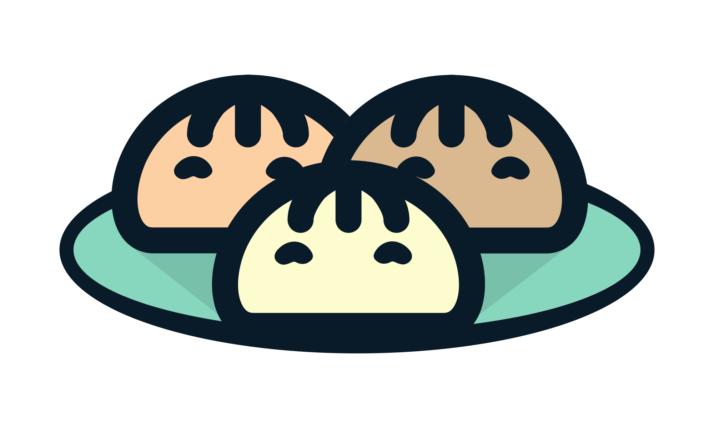
OpenBao External Secrets
External Secrets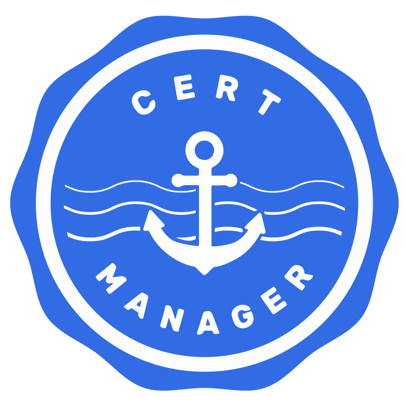
cert-manager Let's Encrypt
Let's Encrypt Keycloak
Keycloak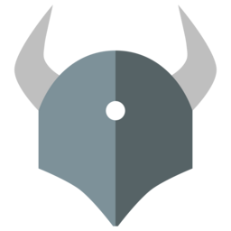
OPA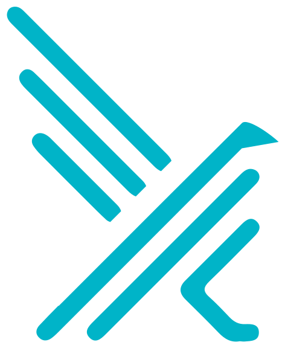
FalcoCheckov
SOPS
 Cloudflare
CloudflareTrivy
L6
Autres
Bases de données, registres, portails développeurs et outillage
Autres
Bases de données, registres, portails développeurs et outillage
 PostgreSQL
PostgreSQL Backstage
Backstage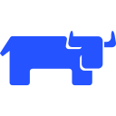
Rancher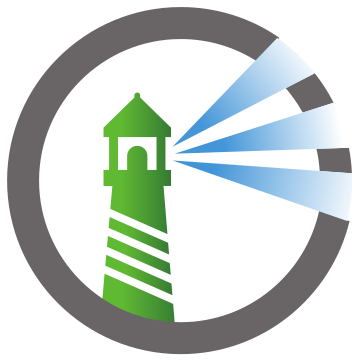
Harbor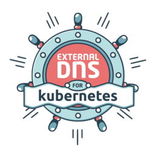
External DNS Bash
Bash Go
GoMkDocs